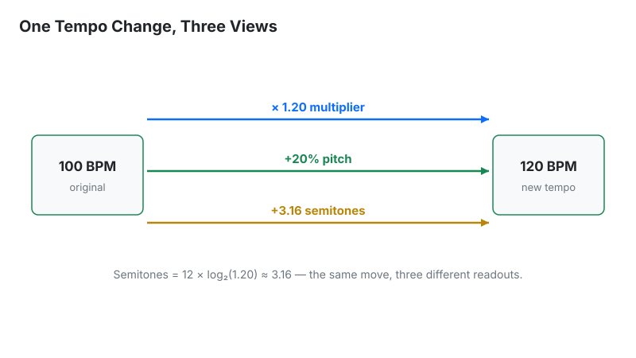
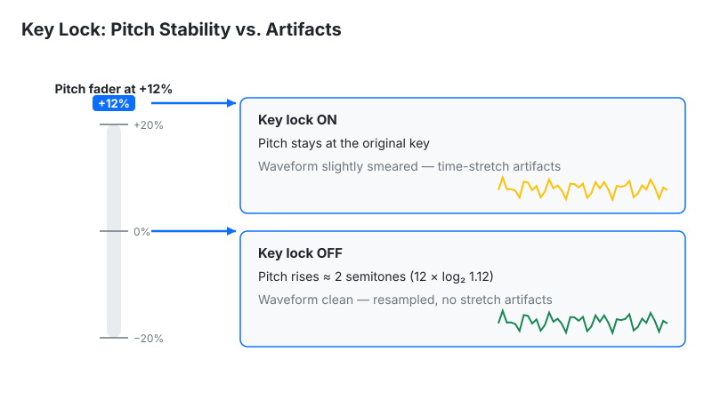

Convert beats per minute (BPM) to playback speed multiplier.
Interpretation:
100).
120), or
click any of the quick preset buttons.1.20×) and the percentage adjustment needed on your pitch fader or DAW
time-stretch dial (e.g., +20%).Last updated: October 18, 2026 · Written by the Pitch Detectors Editorial Team
A BPM to speed calculator converts a tempo change into a playback speed multiplier and a pitch percentage. Moving a 100 BPM track to 120 BPM needs 1.20× speed — a +20% pitch shift. DJs, producers, and video editors use these ratios to match tempos, shift keys, and retime media precisely.
Speed and pitch move together in traditional playback: spin a record faster and it plays higher as well as quicker. Digital key lock (Master Tempo) separates the two, but the underlying ratio never changes. Beatmatching on CDJs, warping a sample in a DAW, and speeding up a podcast apply the same math.
Enter the original BPM and target BPM to get the complete picture: speed multiplier (1.20×), speed percentage (120%), pitch change (+20%), and the matching semitone and cent shift. Quick presets cover common DJ jumps such as 100→120 and 120→100 in one tap.
Methodology: multiplier = target ÷ original; pitch % = (target − original) ÷ original × 100; semitones = 12 × log₂(multiplier); cents = semitones × 100. We verified the widget against hand calculations on 5 sample inputs — 100→120 = 1.20×/+20%/+3.16 st; 120→100 = 0.833×/−16.67%/−3.16 st; 128→130 = 1.0156×/+1.56%; 174→87 = 0.5×/−50%/−12 st; 90→140 = 1.556× — and every result matched exactly.
Three formulas cover every conversion:
Worked example: pitching a 100 BPM track up to 120 BPM:

Planning a full transition between two tracks? The DJ Transition Calculator maps the mix, and the BPM Calculator locks the exact tempos first.
Each readout answers a different practical question:
| Readout | Meaning | Next step |
|---|---|---|
| Speed multiplier | Playback rate ratio (1.20×) | Enter in DAW time-stretch or video speed controls |
| Speed % | Multiplier as a percent (120%) | Match software tempo sliders |
| Pitch % | Fader-style change (+20%) | Dial directly on a DJ pitch fader |
| Semitones / cents | Musical key shift (+3.16 st) | Check key compatibility with the Song Key Finder |
| Duration change | New track length | Plan set timing and radio edits |
Multiplier, speed %, and pitch % describe the identical change from different starting points. Speed % = multiplier × 100, and pitch % = speed % − 100. So 1.20× = 120% speed = +20% pitch. Confusion usually starts at the hardware: Pioneer-style faders display pitch % (±8%), while DAW warp dialogs and video players display speed multiplier or % (1.00×). Convert between the two by adding or subtracting 100.
The semitone readout is the musician's view: it shows how far the key moves, which decides harmonic mixing. A +20% pitch shift is +3.16 semitones — enough to clash with the outgoing track unless key lock is engaged or the keys are compatible.
One semitone equals a speed ratio of 21/12 = 1.05946 — a +5.946% pitch change. Memorize that number to estimate any key shift mentally:
| Semitones | Speed change | Example at 120 BPM |
|---|---|---|
| +1 (minor 2nd) | +5.95% | 127.1 BPM |
| +2 (major 2nd) | +12.25% | 134.7 BPM |
| +3 (minor 3rd) | +18.92% | 142.7 BPM |
| +7 (perfect 5th) | +49.83% | 179.8 BPM |
| +12 (octave) | +100% | 240 BPM (2.00×) |
The reverse direction works the same way: a +6% pitch nudge is effectively one semitone, so a harmonic mix clashing by a semitone has an exact fader fix. For precise key changes between tracks, pair this with the Key Transposition tool.
Standard DJ pitch faders cover ±8% — enough for most same-genre mixing, not for cross-genre jumps. Each common range spans these BPM windows:
| Fader range | At 120 BPM | At 128 BPM | At 174 BPM |
|---|---|---|---|
| ±8% (standard) | 110.4 – 129.6 | 117.8 – 138.2 | 160.1 – 187.9 |
| ±16% (wide) | 100.8 – 139.2 | 107.5 – 148.5 | 146.2 – 201.8 |
| ±50% (ultra-wide) | 60 – 180 | 64 – 192 | 87 – 261 |
Rule of thumb: when the gap exceeds the fader range, stop forcing it — bridge with a transition track in between, or mix the outgoing track's outro into the incoming intro where tempo matters less.
Key lock (Master Tempo on Pioneer, Keylock on Denon) time-stretches audio to change tempo while holding pitch constant. It makes harmonic mixing possible across wide BPM gaps. The price is audio quality: time-stretch smears transients, and the artifacts turn audible past roughly ±10% — first on vocals, acoustic drums, and heavily compressed audio.
Practical policy: key lock ON for harmonic blends wider than ±6%, where a key clash is the bigger danger; key lock OFF for small adjustments (±3% or less), scratching, and turntablism, where the natural pitch nudge sounds better and the algorithm would only add smear. A phasey or "underwater" sound with key lock on is the algorithm itself — narrow the gap or switch it off.

The same ratios retime video. Converting 24 fps film to 25 fps PAL is a 25÷24 = 1.0417× speed-up (+4.17% pitch — the reason PAL audio sounds slightly sharp). Slow motion at 50% speed doubles duration and drops pitch one octave. Learning playback at 0.75× stretches a 4-minute lesson to 5:20 and drops pitch about 5 semitones — fine for watching, useless for playing along without pitch-preserving slowdown.
| Method | Precision | Use when |
|---|---|---|
| This calculator | Exact ratios | Planning pitch moves, key shifts, video retiming |
| DJ pitch fader by ear | ~±0.5% | Live beatmatching where feel matters more than numbers |
| DAW time-stretch | Sample-accurate | Warping audio with key lock in production |
| Tap tempo | ±1–4 BPM input | Finding the starting tempo before converting |
Calculate the number here, then execute by ear — the math locates +20%, but only listening confirms the blend works.